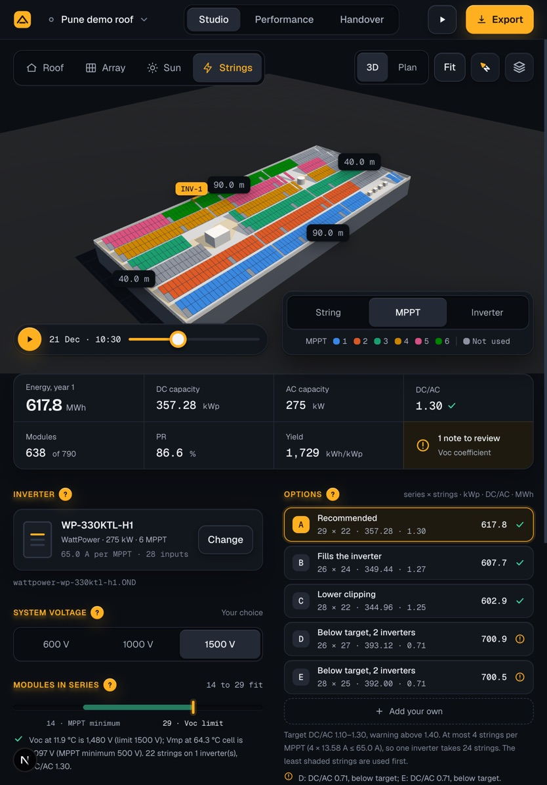
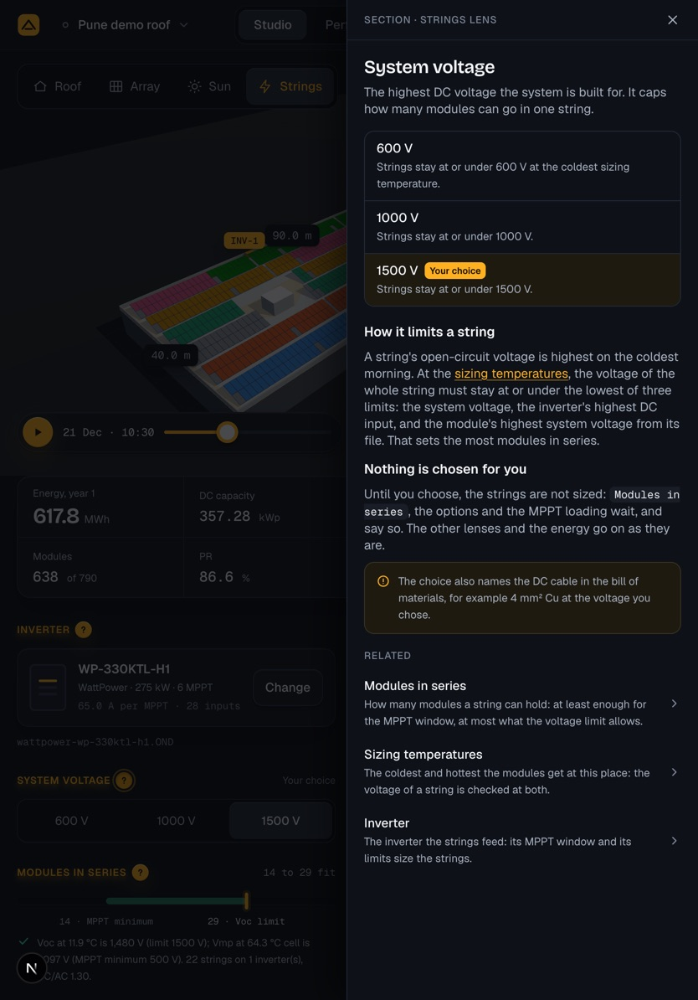
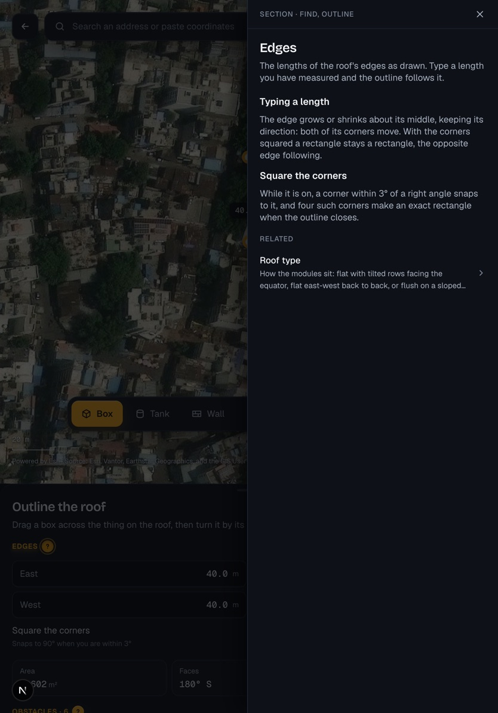

In-app help
A ? beside each section heading of the input panels opens help on what the section is, its choices and what they do, in the app's own words. The core is the help system of the solarlayout app (topics in MDX, each with a key; a typed registry checked by tests; a sheet with Back and related topics; the topic in the address); the look and the places are this app's. The disc and the sheet are drawn here by a prototype in the app itself; the words of the sample topics are checked against the engine. Tablet: the same sheet at the right edge, the whole height, the screen dimmed.
1 · A ? beside each section heading (three times the screen)

- 1Beside every section heading of the input panels, 6 after its words: a disc of the primary action, its orange, its light from above and its shadow, a ? in its ink. 16 on desktop in a press of 24; 20 on touch in a press of 44. It is there only where the section has a topic.
- 2Hover lifts it as the primary buttons lift; the focus ring is the app's; pressed it sinks. While its help is open it stays held in, ringed, so the eye goes back to what is being explained.
- 3A real button: "Help: System voltage", it says it opens a dialog and whether it is open. The heading's own glow is untouched.
2 · The discs on tablet

- 1The same disc, 20 in a press of 44, beside each heading of the inspector under the stage. A press opens the sheet; touch has no tooltip.
3 · The sheet from the right, the screen dimmed

- 1As on desktop: a sheet from the right edge, the whole height over the top bar, 420 wide, the screen dimmed; a press beside it, the ×, or Escape closes it.
- 2Its parts as on desktop: options with "Your choice", the body, the related topics, Back after a link is followed.
- 3The page under it is dimmed and waits.
4 · On Find

- 1The same sheet over Find, the map dimmed behind it.